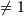

numpy.ogrid¶
- numpy.ogrid = <numpy.lib.index_tricks.nd_grid object at 0x1a37490>¶
nd_grid instance which returns an open multi-dimensional “meshgrid”.
An instance of numpy.lib.index_tricks.nd_grid which returns an open (i.e. not fleshed out) mesh-grid when indexed, so that only one dimension of each returned array is greater than 1. The dimension and number of the output arrays are equal to the number of indexing dimensions. If the step length is not a complex number, then the stop is not inclusive.
However, if the step length is a complex number (e.g. 5j), then the integer part of its magnitude is interpreted as specifying the number of points to create between the start and stop values, where the stop value is inclusive.
Returns : mesh-grid ndarrays with only one dimension  See also
Examples
>>> from numpy import ogrid >>> ogrid[-1:1:5j] array([-1. , -0.5, 0. , 0.5, 1. ]) >>> ogrid[0:5,0:5] [array([[0], [1], [2], [3], [4]]), array([[0, 1, 2, 3, 4]])]